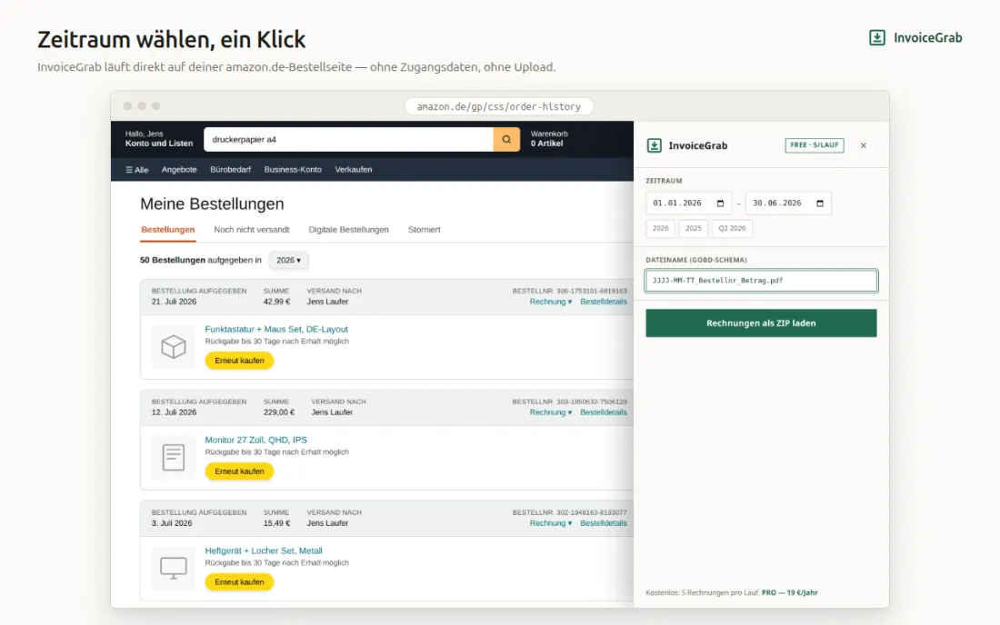
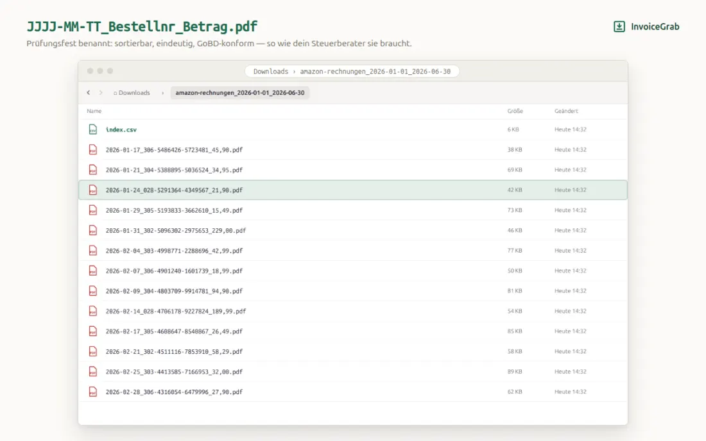
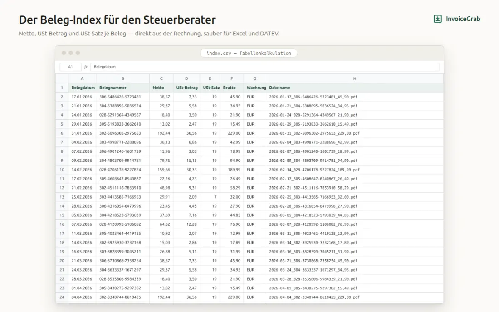
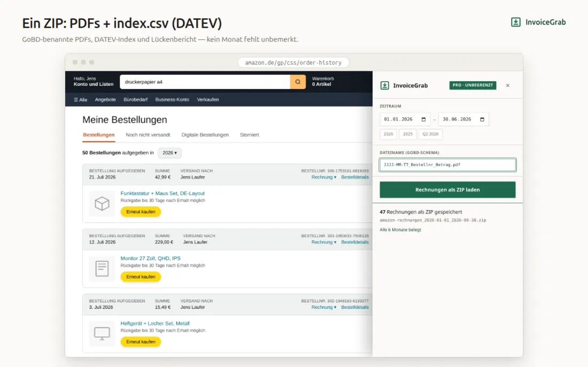

Kurz: Melde dich auf amazon.de an, öffne „Meine Bestellungen“, klicke bei der Bestellung auf „Rechnung“ und wähle die Rechnung aus. Die PDF öffnet sich im Browser – speichern, fertig. Einen Sammel-Download für Privatkonten hat Amazon nicht. Alle Rechnungen eines Zeitraums auf einmal lädt die Browser-Erweiterung InvoiceGrab als ZIP.
Kostenlos: 5 Rechnungen pro Lauf. PRO 19 €/Jahr. Läuft in deinem Browser mit deiner bestehenden Amazon-Anmeldung – keine Zugangsdaten, kein Upload, kein Server.
Am Rechner ist der Weg am kürzesten. So kommst du zu einer einzelnen Rechnung als PDF:
Mehrere Rechnungen pro Bestellung? Das ist normal. Wird eine Bestellung in Teilen geliefert, gibt es pro Lieferung eine Rechnung. Lade alle, sonst passt die Summe nicht zur Abbuchung.
In der Amazon-App tippst du auf das Menü (☰) oder das Profil-Symbol, dann auf „Meine Bestellungen“. Öffne die Bestellung, dann die „Bestelldetails“, und tippe auf „Rechnung anzeigen“ bzw. „Rechnung herunterladen“. Auf dem iPhone speicherst du die PDF über Teilen → „In Dateien sichern“.
Fehlt der Link in der App, öffne amazon.de in Safari und fordere über das Seitenmenü in der Adressleiste die „Desktop-Website“ an. Dann gehst du vor wie am PC. Rechnungen erscheinen oft erst nach dem Versand – fehlt sie direkt nach der Bestellung, schau später noch einmal nach.
Für viele Rechnungen ist das Handy der falsche Ort: InvoiceGrab läuft nur in Chrome und Firefox am Rechner, nicht auf dem iPhone.
Mit einem Amazon-Business-Konto gibt es einen eigenen Bereich „Meine Rechnungen“. Dort markierst du mehrere Belege und lädst sie gesammelt als ZIP herunter. Zugriff haben Administratoren und Nutzer mit der Rolle „Buchhaltung und Finanzen“. Einzelne Rechnungen findest du wie gewohnt über „Meine Bestellungen“.
InvoiceGrab ist für private amazon.de-Konten gebaut. Einen Sammelabruf für Amazon Business bietet es nicht.
Wenn bei einer Bestellung kein Rechnungs-Link steht, hat das meist einen dieser Gründe:
Wichtig für die Buchhaltung: Die Bestellübersicht ist keine Rechnung. Für den Vorsteuerabzug brauchst du die Rechnung des Verkäufers. Fehlt eine Rechnung zu einer Bestellung, die Amazon selbst verkauft hat, hilft der Amazon-Kundenservice; sie kommt dann meist per E-Mail.
Ausführlich, mit Vorlage für die Anfrage: Amazon-Rechnung fehlt – so forderst du sie an
Für private Konten hat Amazon keinen Sammel-Download. Wer am Jahresende fünfzig oder dreihundert Belege braucht, klickt sie einzeln durch – oder lässt das InvoiceGrab machen. Die Erweiterung öffnet deine Bestellseite, lädt die Rechnungs-PDFs eines Zeitraums und legt sie als ZIP in deinen Download-Ordner.
„Ich habe damit meine eigenen 336 Amazon-Rechnungen von 2019 bis 2026 in einem Lauf geladen.“ – Jens Laufer, Entwickler von InvoiceGrab
Das Panel öffnet sich direkt auf deiner Bestellseite. Zeitraum als Jahr, Quartal oder freies Datum. Der Fortschritt läuft sichtbar mit – du siehst, bei welcher Bestellung er steht.

Jede Datei heißt JJJJ-MM-TT_Bestellnr_Betrag.pdf – sortierbar, eindeutig, ohne Nacharbeit im Dateimanager.

Aus der Rechnung gelesen, nicht geschätzt. Gemischte Sätze (19 % und 7 % in einer Bestellung) stehen als Splitbuchung in der index.csv: Belegdatum; Belegnummer; Netto; USt-Betrag; USt-Satz; Brutto; Währung; Dateiname.

Die zusammenfassung.txt im ZIP zeigt pro Monat Bestellungen und gefundene Rechnungen, nennt Monate ohne Beleg und listet übersprungene Bestellungen. Fehlendes fällt auf, statt still zu fehlen.

Ein Jahresabschluss zahlt das Abo beim ersten Lauf zurück.
dauerhaft, ohne Konto
jährliche Abrechnung
InvoiceGrab hat keinen Server. Der Lauf passiert im Browser, in deiner bereits angemeldeten Amazon-Sitzung. Die Erweiterung fragt keine Zugangsdaten ab, lädt nichts hoch und liest außerhalb eines von dir gestarteten Laufs nichts.
Für private Konten nicht. Dort lädst du jede Rechnung einzeln über „Meine Bestellungen“. Amazon Business hat unter „Meine Rechnungen“ einen Sammel-Download als ZIP. Für private amazon.de-Konten lädt InvoiceGrab alle Rechnungen eines Zeitraums in einem Lauf.
Menü oder Profil → „Meine Bestellungen“ → Bestellung → „Bestelldetails“ → „Rechnung anzeigen“. Fehlt der Link, öffne amazon.de im Browser als Desktop-Website.
Ja, mit InvoiceGrab. Du wählst einen Zeitraum – ein Jahr, ein Quartal oder freie Daten – und die Erweiterung lädt die Rechnungs-PDFs aller Bestellungen darin in einem Durchgang als ZIP. In der kostenlosen Version sind es 5 Rechnungen pro Lauf, mit PRO unbegrenzt.
Ja. InvoiceGrab gibt es im Chrome Web Store und bei Firefox Add-ons, jeweils für den Browser am Rechner.
Ja, die Benennung: Die Dateien heißen JJJJ-MM-TT_Bestellnr_Betrag.pdf – chronologisch sortierbar, eindeutig einer Bestellung zugeordnet und ohne manuelles Umbenennen archivierbar. Die GoBD-Konformität deiner Ablage hängt zusätzlich an deinem Archivsystem – die Benennung ist der Teil, den InvoiceGrab übernimmt.
Nein. Unterstützt wird ausschließlich amazon.de. Weitere Marktplätze stehen auf der Roadmap.
Sie werden übersprungen und in der zusammenfassung.txt namentlich ausgewiesen. InvoiceGrab fordert keine fehlenden Rechnungen bei Marketplace-Händlern an – aber du siehst, welche fehlen.
Nein. InvoiceGrab läuft in deinem Browser und nutzt die Sitzung, in der du ohnehin angemeldet bist. Es gibt kein Login-Feld und keinen Upload.
Ja, über die index.csv im ZIP. Sie enthält Belegdatum, Belegnummer, Netto, USt-Betrag, USt-Satz, Brutto, Währung und Dateiname – die Spalten, die eine Buchungsvorlage braucht. Gemischte Steuersätze stehen als Splitbuchung.
Die kostenlose Version bleibt dauerhaft kostenlos und lädt 5 Rechnungen pro Lauf. PRO kostet 19 €/Jahr und hebt die Begrenzung auf.
InvoiceGrab kommt von Jens Laufer, Data Scientist und Geschäftsführer der Solytics GmbH. Er hat die Erweiterung gebaut und mit seinem eigenen Amazon-Konto getestet: 336 Rechnungen aus sieben Jahren in einem Lauf. Fragen und Fehlermeldungen gehen direkt an ihn: jens.laufer@solytics.de.